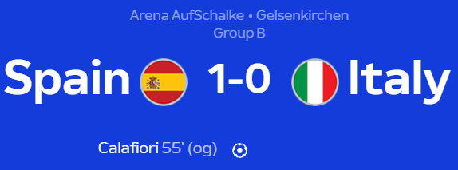
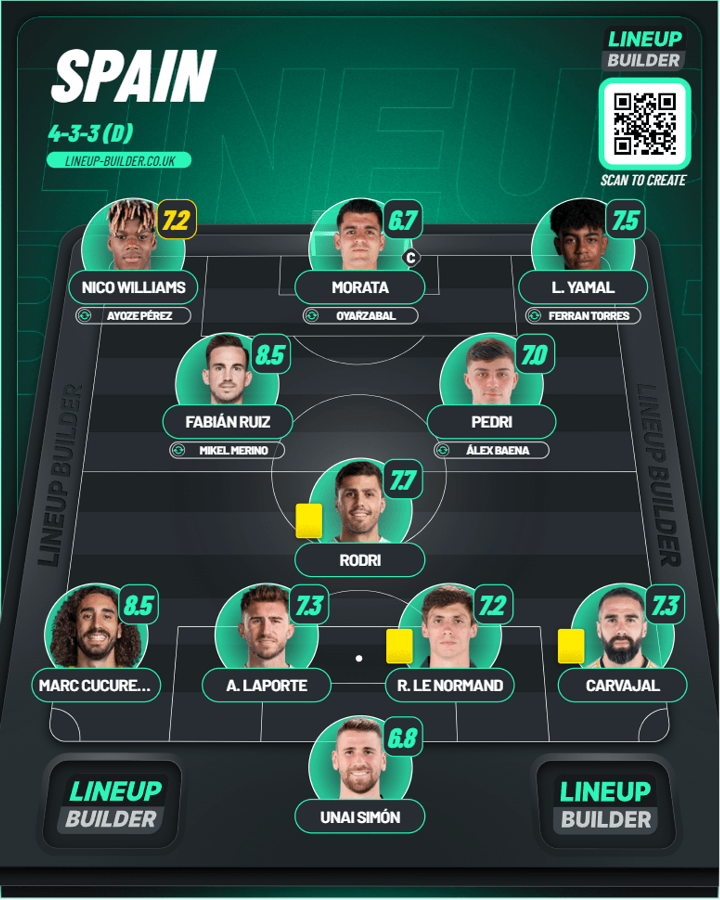
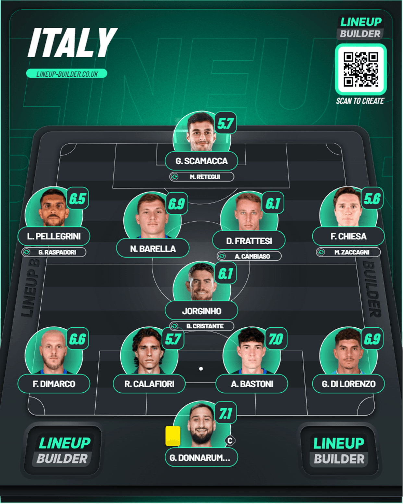
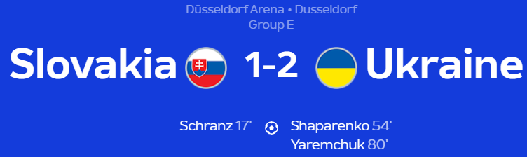
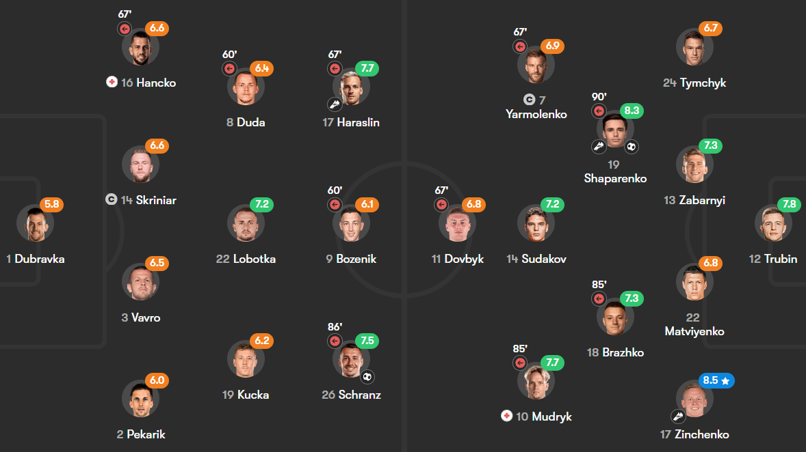
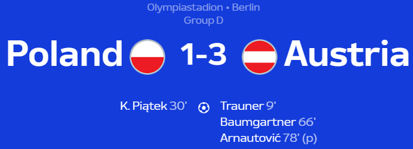
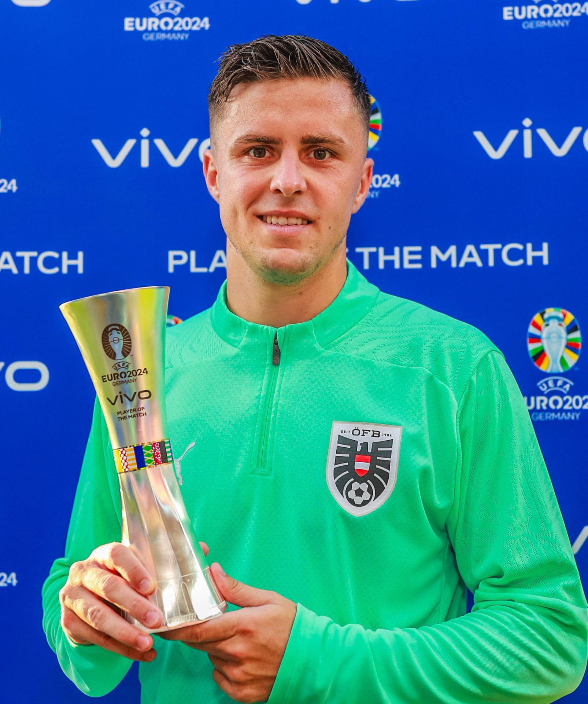
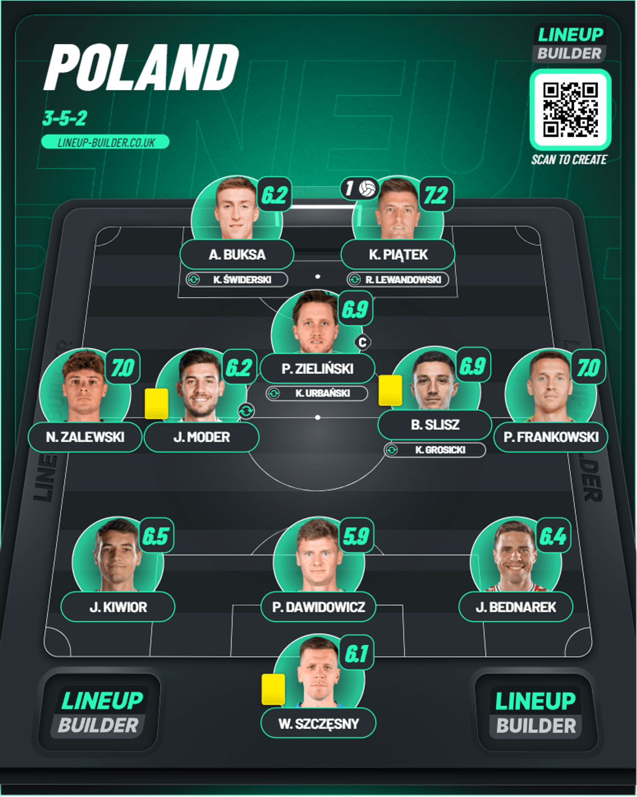
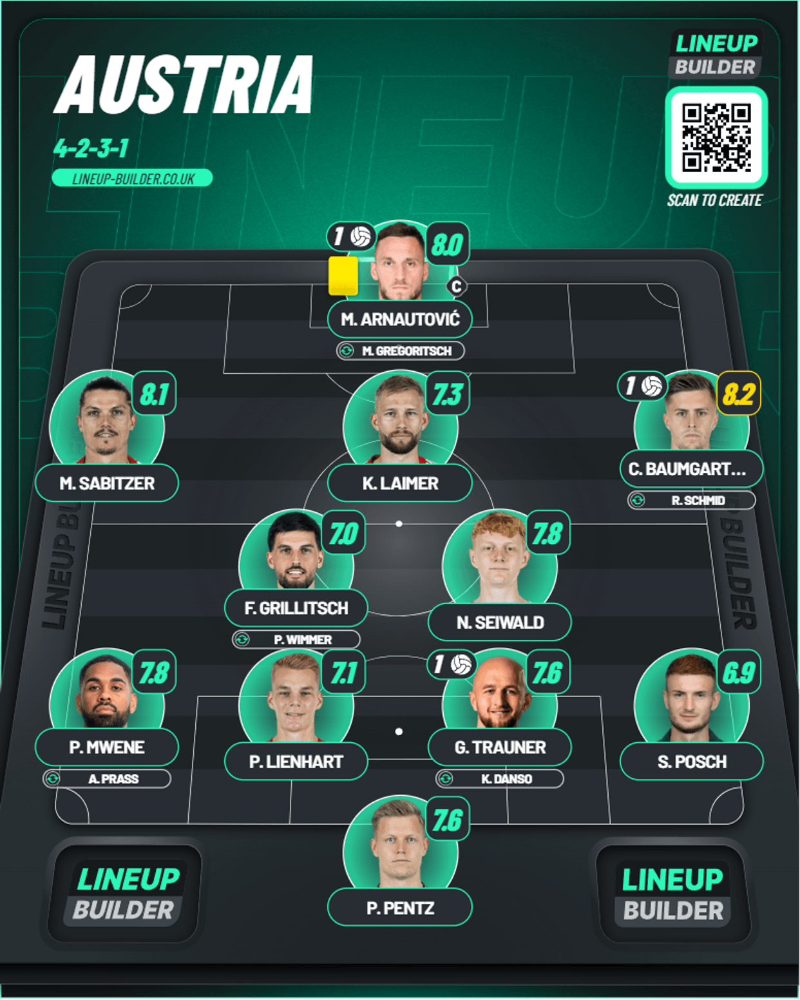

Day 7
Table of Contents
Day 7
Spain v Italy

Spain in control. Donnarumma keeps Italy in it to no avail. Calafiori goes from “Aura” to “Own Goal humbling” 😅. Another absolutely controlled win from Spain here where they really dominated proceedings rather comfortably than expected and Italy really didn’t have much of an answer. In the end, the breakthrough was from an own goal from Calafiori(Man went from Aura to getting humbled like this). Let’s get into the reaction.
1st Half
We start as early as minute 3 when Williams bursts down the left side and floated a great cross for Pedri, but his header was saved well by Donnarumma. You’re going to hear the Italian’s name a lot here because he was responsible for keeping this score at only 1-0. Next was minute 11 when Morata found himself on the left and pulled it back for an unmarked Williams, but he skied an easy header. There were another couple saves from Donnarumma. First was minute 23 when Yamal dribbled past multiple Italy defenders and lost the ball but Morata was there, and his shot was saved. Next was 2 minutes later, Ruiz pounced on the loose ball in the middle and drove forward before unleashing a pile drive, and it was saved brilliantly. There was another strong shot from Ruiz towards the end of the half, but Donnarumma was equal to it. Towards the end of the half Rodri got carded because of UEFA’s rule where only the captain is allowed to talk to the ref and because of that he will be suspended for Spain’s last group game. Man thought he could use City’s tactics here 🤣. Cute.
2nd Half
Immediate changes were seen from Italy as they introduced the likes of Cambiaso and Cristante. Cristante got the fastest yellow card as a subsititute just seconds after he came on. It was fastest since 1980, apparently. So much excitement to get involved 😅. Spain had yet another great chance when in minute 52 Williams found Cucurella on the overlap and he found Pedri who really didn’t test Donnarumma at all and missed. They didn’t have to wait long as a couple of minutes later, Williams drove down the left side again and sent the cross in which was flicked on by Morata and it was coming to the back post where Calafiori but he met it with his knee instead of his head and it went into the back of the net. Spain deserved the goal for sure given how long they were knocking on the door of the Italians. Spain nearly had a second when Williams was found by Cucurella as he cut inside and he tried to find the top corner but it struck the bar. Coming towards the end of the game, Spain really stifled Italy as they really couldn’t create any clear cut chances. They only managed 2 shots and both were off-target. There was a last chance from Spain again when Ayoze Perez got the ball on the left and tried to beat Donnarumma but he stood firm to deny him. And it ended in that way. It was a deserved win and more so given how much they nullified the opposition’s attack.
Player of the Match - N. Williams

He’s had a storming season for Bilbao and he more than deserved this call up and in this match he was a huge menace for the Italian defense, and they couldn’t keep him quiet. He really deserved a goal, but his threat was absolutely huge and him and Cucurella on that left-hand side is a very solid partnership to have.
Lineups
- Ratings from Fotmob
Spain

Italy

Slovakia v Ukraine

A game of 2 halves. Yaremchuk the difference maker off the bench. Group E looks to be wide open now. Given we have yet to see Belgium against Romania until then Group E is anybody’s game now with Ukraine getting the win thanks to the super sub Yaremchuk. This was a true game of two halves as Slovakia were really dominant and deserved their goal but Ukraine really turned it around in the 2nd half and got the points in the end.
1st Half
We start with a brilliant double save from Trubin who started ahead of Lunin after his horrid show against Romania in minute 10. Haraslin got an opening and his shot was first saved and he saved it again from close range from Schranz. There was another good save from Trubin from a free kick by Hancko in minute 16. But a minute later, Slovakia found the opener when they took a quick throw in on the left and Haraslin found Schranz on the far post where he nodded it past Trubin. Even though Slovakia were dominant they had to stay alert when Dovbyk got past Skriniar and tried to get a shot but Pekarik managed to block the shot. There was another chance when Yarmolenko found Dovbyk from the right and he found Yarmolenko again but the defense stood firm but the ball fell to Tymchyk whose shot rattled the post. Slovakia broke on the counter in minute 43 after they won the ball and Haraslin had so much space from the left and his low drive was saved well by Trubin.
2nd Half
Ukraine got the equalizer finally in minute 54 when Mudryk got on the counter, and he found Zinchenko on the left and his cross was met by Shaparenko who placed it properly past Dubravka. Ukraine started to get into their groove and Mudryk had a half chance at minute 74 when Zubkov ran through the middle and tried to tee up Mudryk but his pass was slightly overhit and the shot was from a tight angle was parried onto the woodwork. Ukraine found their winner as the substitute Yaremchuk who came on for Dovbyk trapped Shaparenko’s long ball perfectly and delicately puts it past Dubravka. And that was how it finished up.
Player of the Match - M. Shaparenko

Well deserved. This was a really good performance as he was instrumental in the turnaround by Ukraine with the goal to equalize and he made a perfect assist for the eventual match winner.
Lineups
- Pulled from Fotmob

Poland v Austria

Dominant Austria. Rangnick gets the deserved result. Poland eliminated. What a result from Austria. They deserved a draw at the very least against France and now they absolutely dominated this match from start to finish. They never panicked even when Poland equalized and it was a really good result and with this Poland have been confirmed to be completely eliminated from Euro 2024. They just don’t have the right talents to use instead of Lewandowski and it showed badly over these 2 games.
1st Half
Austria got off to a flyer after a great spell of domination in minute 9 when Mwene managed to get down the byline and deliver a great cross for Trauner who made no mistake heading it in the top left corner. There was a moment from Poland where Zielinski took a shot and there were shouts for a penalty because it struck Mwene’s arm but it was waved off and VAR found no issues either. The equalizer came when a corner came for Poland but it cleared till Zielinski and he sent another ball in deep. It fell to Piatek who rounded Trauner before slotting it in the bottom right corner past Pentz. Sabitzer had the last major chance before the half end when he hit a low drive which just whizzed past the left post.
2nd Half
Austria kept working hard like they were expected to and they found the breakthrough via Baumgartner who should have had a goal against France. Prass got the ball on the right and sent in inwards for Arnautovic who dummied it for the RB Leipzig man who made no mistake placing his shot past Szczesny. Baumgartner was really involved and he teed up Wimmer but Szczesny was equal to it. The third came via a penalty. Pentz found Arnautovic who played in Sabitzer perfectly and he was through one on one with Szczesny but he wiped the Austria man out and it was given without hesitation and Arnautovic tucked away the penalty. There was a really good effort as well from the RB Posch who unleashed a crazy effort on his weak foot but Szczesny saved it brilliantly.
Player of the Match - C. Baumgartner

Well deserved. He was a good threat in a very hard working team and he was lively and he took his goal well and he almost set up another. A great performance.
Lineups
Poland

Austria
